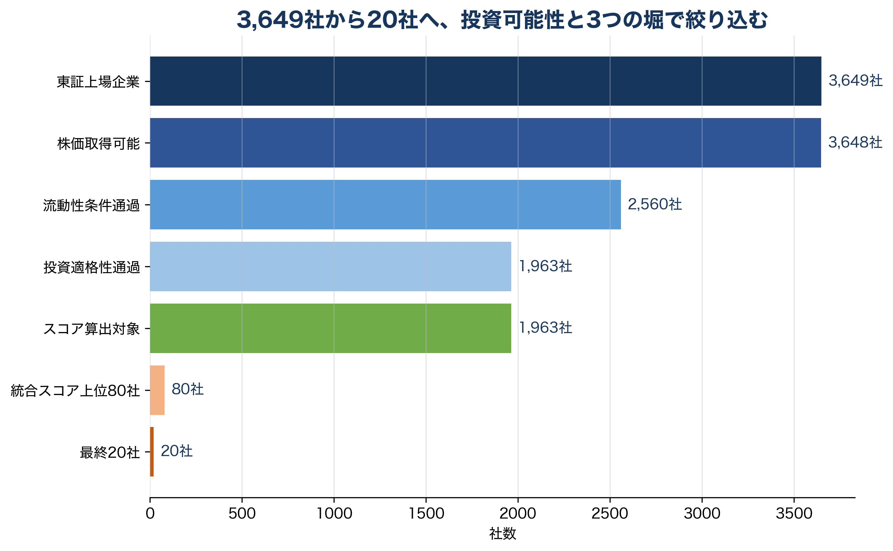

守る堀
収益性、キャッシュ創出力、安定性、競争地位から、既に強い事業基盤を持つ企業を評価する。
Stock League Screening Method
「完成された堀」だけでなく、日本企業の資本効率改善、事業変革、AI時代の新しい産業基盤を評価するため、 財務・株価・テーマ性を統合したスコアで候補銘柄を選定した。
01 / Framework
収益性、キャッシュ創出力、安定性、競争地位から、既に強い事業基盤を持つ企業を評価する。
低PBR・低PER、ROE改善、配当、成長率から、資本効率改善や再評価余地を評価する。
半導体、光通信、データセンター、電力、省人化、データ・ソフトウェアなど、将来の堀を評価する。
良い企業を高値づかみしないため、PER・PBR・配当利回り、モメンタム、ボラティリティを加味する。
02 / Funnel

03 / Normalization
各指標は1%点から99%点の範囲にクリップし、極端な値の影響を抑えた。
winsorize(x) = clip(x, q01, q99)
指標間の単位差をなくすため、横断面のZスコアに変換した。
z(x) = (winsorize(x) - mean) / std
PER・PBRは低いほど評価されるため、逆数を標準化して使った。
cheapness(PER) = z(1 / PER)
04 / Score Formula
収益力、キャッシュ創出力、安定性、競争地位を統合する。
Moat = 0.35 Profitability + 0.25 CashGeneration + 0.20 Stability + 0.20 CompetitivePosition
低PBR・低PER、売上・営業利益の成長、配当利回りから、再評価余地と資本効率改善を測る。
Transformation = 0.35 z(1/PBR) + 0.20 z(1/PER) + 0.20 avg_z(RevenueGrowth, OperatingIncomeGrowth) + 0.15 z(DividendYield)
AIインフラ、無形資産投資、省人化、データ・ソフトウェア、信頼・セキュリティへの露出を評価する。
FutureMoat = 0.30 AIInfrastructure + 0.25 IntangibleAsset + 0.20 Automation + 0.15 DataSoftware + 0.10 TrustSecurity
利益、純資産、株主還元の3面から、価格の妥当性を確認する。
Valuation = 0.50 z(1/PER) + 0.35 z(1/PBR) + 0.15 z(DividendYield)
守る堀、変わる堀、生まれる堀を中核にし、最後に価格規律を加える。
BB = 0.30 Moat + 0.25 Transformation + 0.30 FutureMoat + 0.15 Valuation
直近12か月から直近1か月を除いたモメンタムを加点し、ボラティリティと最大ドローダウンを減点する。
AdjustedBB = BB + 0.10 Momentum - 0.10 Risk
05 / Deep Dive
異なる単位の財務指標を同じ土俵で比較し、極端な外れ値に順位全体が支配されないようにした。
winsorize(x) = clip(x, q01, q99)
1%点未満は1%点に、99%点超は99%点に丸める。
z(x) = (winsorize(x) - mean) / std
各銘柄が母集団平均との差でどれだけ優れているかを表す。
cheapness(PER, PBR) = z(1 / PER), z(1 / PBR)
PER・PBRは低いほど割安なので、逆数にしてから標準化する。
スコア以前に、500万円の仮想ポートフォリオに組み入れる最低条件を満たすかを確認した。
| 条件 | 説明変数 | 狙い |
|---|---|---|
| 株価取得可能 | close > 0 | 実際に購入価格を置ける銘柄に限定する。 |
| 流動性 | avg_trading_value_60d >= 20,000,000円 | 売買代金が小さすぎる銘柄を避ける。 |
| 財務安全性 | equity_ratio、total_assets、equity | 債務超過や自己資本が薄い企業を除く。 |
| 継続収益力 | operating_income、ordinary_income、net_income | 赤字が続く企業を機械的に高評価しない。 |
| 営業CF | operating_cf、ocf_margin | 利益が現金化されているかを見る。 |
| データ品質 | price_history_days、PER/PBR/ROE異常値 | スコア計算の信頼性を確保する。 |
既存事業の強さを、利益率、現金創出、株価安定性、競争地位から評価した。
Moat = 0.35 Profitability + 0.25 CashGeneration + 0.20 Stability + 0.20 CompetitivePosition
| 説明変数 | 主な元指標 | 意味 |
|---|---|---|
| Profitability | operating_margin、roe、equity_ratio | 高い利益率と資本効率を継続できる力。 |
| CashGeneration | ocf_margin | 会計上の利益が営業キャッシュフローに変わる力。 |
| Stability | -annual_volatility | 株価変動が相対的に小さく、事業評価が安定していること。 |
| CompetitivePosition | rd_ratio、operating_margin | 研究開発や利益率に表れる競争地位。 |
日本株市場で重要な、低PBR是正、資本効率改善、事業改革、株主還元の余地を評価した。
Transformation = 0.35 z(1/PBR) + 0.20 z(1/PER) + 0.20 avg_z(RevenueGrowth, OperatingIncomeGrowth) + 0.15 z(DividendYield)
| 説明変数 | 意味 | 評価の方向 |
|---|---|---|
| z(1/PBR) | 純資産対比の割安さ。 | PBRが低いほど高評価。 |
| z(1/PER) | 利益対比の割安さ。 | PERが低いほど高評価。 |
| RevenueGrowth | 売上成長。 | 成長率が高いほど高評価。 |
| OperatingIncomeGrowth | 営業利益成長。 | 利益改善が強いほど高評価。 |
| DividendYield | 株主還元。 | 配当利回りが高いほど高評価。 |
AI時代に新しく形成される産業基盤への接続度を、事業テーマと無形資産投資から評価した。
FutureMoat = 0.30 AIInfrastructure + 0.25 IntangibleAsset + 0.20 Automation + 0.15 DataSoftware + 0.10 TrustSecurity
| 説明変数 | 主な判定材料 | 意味 |
|---|---|---|
| AIInfrastructure | 半導体、光通信、データセンター、電力、電子部品 | AI普及を支える物理インフラ。 |
| IntangibleAsset | rd_ratio | 研究開発など、将来競争力への投資。 |
| Automation | ロボット、FA、センサー、精密機器、機械 | 人手不足と省人化需要への対応力。 |
| DataSoftware | ソフトウェア、クラウド、SaaS、情報通信 | データ活用と業務デジタル化の基盤。 |
| TrustSecurity | セキュリティ、検査、品質、監査、保険 | AI・データ社会で重要になる信頼性の基盤。 |
良い企業や成長テーマを、高すぎる価格で買わないための制約として使った。
Valuation = 0.50 z(1/PER) + 0.35 z(1/PBR) + 0.15 z(DividendYield)
| 説明変数 | 意味 | 重みの理由 |
|---|---|---|
| z(1/PER) | 利益に対して株価が割安か。 | 現在の利益との対応を最も重視。 |
| z(1/PBR) | 純資産に対して株価が割安か。 | 日本株の低PBR是正テーマと接続。 |
| z(DividendYield) | 株主還元の厚さ。 | 下値耐性と資本政策の姿勢を補助的に評価。 |
市場が既に評価し始めている銘柄を加点しつつ、値動きが大きすぎる銘柄にはリスク控除を入れた。
Momentum = z(Return12M - Return1M)
直近12か月リターンから直近1か月リターンを除き、短期的な過熱を少し抑える。
Risk = avg_z(AnnualVolatility, Abs(MaxDrawdown))
年率ボラティリティと最大ドローダウンの大きさを平均する。
| 説明変数 | 意味 |
|---|---|
| Return12M - Return1M | 短期急騰だけでなく、中期的な市場評価を捉える。 |
| AnnualVolatility | 日次リターンの標準偏差を年率換算した値。 |
| Abs(MaxDrawdown) | 過去期間でピークからどれだけ下落したか。 |
守る堀、変わる堀、生まれる堀、価格規律を統合し、最後に市場評価とリスクで補正した。
BB = 0.30 Moat + 0.25 Transformation + 0.30 FutureMoat + 0.15 Valuation
AdjustedBB = BB + 0.10 Momentum - 0.10 Risk
| 構成要素 | 重み | 役割 |
|---|---|---|
| Moat | 30% | 既存の事業基盤と安定性。 |
| Transformation | 25% | 日本株再評価と資本効率改善。 |
| Future Moat | 30% | AI時代の新しい成長基盤。 |
| Valuation | 15% | 高値づかみを避ける価格規律。 |
| Momentum | +10% | 市場評価の確認。 |
| Risk | -10% | 価格変動と下落リスクの控除。 |
銀行、保険、証券は一般事業会社と財務構造が異なるため、同じ営業CF・自己資本比率基準を機械的に当てない。
| 一般事業会社で重視 | 金融業で重視 |
|---|---|
| 営業利益率、営業CF、自己資本比率 | ROE、純利益・経常利益の安定性 |
| 有利子負債倍率、OCFマージン | PBR、PER、配当利回り |
| 売上成長、営業利益成長 | 資本効率、株主還元、業種内相対評価 |
06 / Eligibility
流動性を満たした銘柄に対して、財務データの欠損、自己資本比率、赤字継続、営業CF、過大レバレッジ、 PER・PBR・ROEなどの異常値、価格履歴不足を確認した。重複を含む除外理由の主な件数は以下の通り。
| 除外理由 | 件数 |
|---|---|
| 財務データ欠損 | 262 |
| 自己資本比率10%未満 | 69 |
| 営業赤字の継続 | 151 |
| 営業CFマイナス継続 | 284 |
| 過大レバレッジ | 73 |
| バリュエーション異常値 | 14 |
| 収益性異常値 | 70 |
| その他データ品質 | 38 |
07 / Final 20
0.45 AdjustedBB + 0.25 Transformation + 0.20 Valuation + 0.10 Moat - 0.05 RiskPenalty
0.45 AdjustedBB + 0.25 FutureMoat + 0.10 Moat + 0.05 Transformation - 0.04 RiskPenalty + themeBonus
0.35 AdjustedBB + 0.35 Moat + 0.10 Transformation + 0.05 FutureMoat + 0.05 Valuation - 0.05 RiskPenalty + moatBonus
0.45 AdjustedBB + 0.20 Moat + 0.15 Transformation + 0.10 FutureMoat + 0.10 Valuation - 0.05 RiskPenalty
AdjustedBB上位だけで20社を選ぶと、似た特徴の銘柄に偏りやすい。そこで、最終段階では役割ごとの目的に合わせて重みを変えた。
| 役割 | 重視する説明変数 | 選定上の意味 |
|---|---|---|
| 変わる堀 | AdjustedBB、Transformation、Valuation、Moat | 再評価余地があり、かつ価格面の説得力がある企業を選ぶ。 |
| 生まれる堀 | AdjustedBB、FutureMoat、Moat、Transformation、themeBonus | AIインフラや省人化など、将来の堀に接続する企業を選ぶ。 |
| 守る堀 | AdjustedBB、Moat、Transformation、FutureMoat、moatBonus | ポートフォリオの安定性を支える既存優良企業を選ぶ。 |
| 分散・橋渡し枠 | AdjustedBB、Moat、Transformation、FutureMoat、Valuation | 特定テーマへの偏りを抑え、全体のバランスを整える。 |